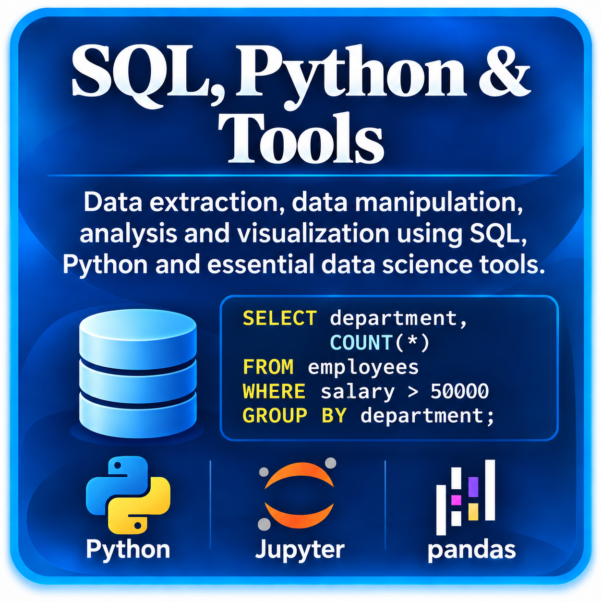

Python para Data Science: variables, tipos y estructuras básicas
Aprende la sintaxis básica de Python, variables, tipos de datos y estructuras fundamentales para análisis de datos.
Próximamente
Una ruta práctica para dominar las herramientas que permiten obtener, limpiar, transformar, explorar, visualizar y reproducir análisis de datos.
Esta ruta comienza con Python, NumPy y pandas para construir una base sólida de programación y manipulación de datos. Después incorpora SQL para consultar y combinar información directamente desde bases de datos.
Finalmente conectamos EDA, visualization, Jupyter Notebook, Git, GitHub, environments y dependency management dentro de un workflow reproducible de principio a fin.

El recorrido sigue una progresión intencional: Python → NumPy → pandas → Cleaning → SQL → JOINs/CTEs/Window Functions → EDA → Visualization → Jupyter → Git/GitHub → Reproducibility.
Aprende la sintaxis básica de Python, variables, tipos de datos y estructuras fundamentales para análisis de datos.
Comprende cómo controlar el flujo de un programa usando condiciones y bucles para automatizar tareas repetitivas.
Construye funciones reutilizables, parámetros, valores de retorno y buenas prácticas básicas para organizar código.
Introduce NumPy arrays, shapes, dimensions, indexing y por qué son esenciales para cálculo numérico eficiente.
Comprende vectorization y cómo NumPy permite operar sobre arrays sin escribir bucles explícitos para cada elemento.
Aprende a trabajar con Series y DataFrames como estructuras centrales para análisis tabular con pandas.
Selecciona columnas, filtra filas, ordena datos y combina condiciones para explorar datasets de forma efectiva.
Desarrolla un workflow para detectar, corregir y documentar problemas comunes de calidad de datos con pandas.
Comprende estrategias para identificar y tratar valores faltantes sin ocultar la estructura real del problema.
Aprende GroupBy, agregaciones y estadísticas resumen para transformar datos detallados en información útil.
Domina merge y join para combinar DataFrames a partir de claves comunes y relaciones entre tablas.
Trabaja con fechas y tiempos, parsing, extracción de componentes y operaciones temporales dentro de pandas.
Construye consultas SQL básicas usando SELECT, FROM y WHERE para recuperar información desde tablas.
Aprende GROUP BY, funciones de agregación y HAVING para resumir datos directamente en SQL.
Comprende INNER, LEFT, RIGHT y FULL JOIN y cómo conectar tablas de forma lógica.
Aprende a estructurar consultas complejas con subqueries y Common Table Expressions para mejorar claridad y reutilización.
Introduce Window Functions para rankings, acumulados, comparaciones y cálculos dentro de particiones.
Utiliza CASE WHEN para incorporar lógica condicional y crear variables derivadas dentro de consultas SQL.
Desarrolla Exploratory Data Analysis combinando estadística descriptiva, inspección visual y preguntas sobre los datos.
Aprende a construir visualizaciones claras con Matplotlib para comunicar patrones, relaciones y distribución.
Explora Seaborn como capa de alto nivel para visualizaciones estadísticas rápidas y expresivas.
Organiza análisis reproducibles dentro de Jupyter Notebook mediante una secuencia clara de carga, transformación, análisis y resultados.
Comprende repositorios, commits, branches y GitHub como herramientas para versionar y compartir proyectos de Data Science.
Aprende a gestionar dependencias, entornos virtuales y requirements.txt para que un proyecto pueda reproducirse en otra máquina.
Integra Python, NumPy, pandas, SQL, visualización, Jupyter y Git/GitHub dentro de un workflow reproducible de principio a fin.
Primero necesitamos una base de programación con Python y operaciones eficientes con NumPy. Después usamos pandas para manipular datos tabulares, limpiar problemas de calidad y combinar múltiples fuentes.
SQL aparece después porque muchas tareas reales de Data Science comienzan recuperando y agregando datos directamente desde bases relacionales. JOINs, CTEs y Window Functions permiten resolver consultas más cercanas a problemas profesionales.
Finalmente, EDA y visualization ayudan a comprender y comunicar los datos, mientras que Jupyter, Git, GitHub, environments y dependency management convierten un análisis aislado en un proyecto que puede repetirse, revisarse y compartirse.